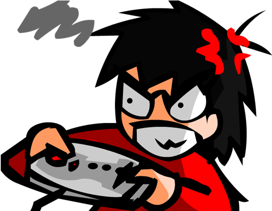

Games Area
Games Area
Yo, welcome to the Game Area!
This is where the fun begins, whether you're a hardcore gamer or just here to have some casual fun.
It's your one-stop shop for all things gaming. Get ready to explore, discover, and, most importantly, have a blast.
If you love games as much as we do, you're in the right place!

All Games Will Be Found in the Game Station
Here in the Game Station,
we've got a collection of the best games out there—ones that are not just popular,
but actually loved by players everywhere. No more guessing which game to play next!
We’ve got everything from epic action adventures to chill puzzle games. Trust us, there’s something for everyone.
Whether you want to relive the classics or check out the latest hits, we've got you covered.
Basically, if it's good, it's here. So, kick back, pick a game, and dive into the fun!
Any Help, You Can Visit Our Help Station
Stuck? Need a hand? Don’t worry. The Help Station is here for you whenever you need it.
Whether you need tips on a game, help navigating the site,
or just want to chat about what game you should play next, we’ve got your back.
We’re all about making your experience smooth and fun, so if you need anything,
just drop by the Help Station and we'll sort you out.